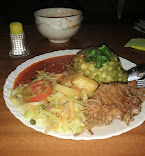

Day into evening
Start with flavour
Roasted and fried favourites, local vegetables and easy daytime energy. Timba XO is a restaurant before the lights come up.

The Timba XO experience
Where lunch becomes drinks, drinks become a table, and the table becomes a dance floor.
Your night, your tempo
Day into evening
Roasted and fried favourites, local vegetables and easy daytime energy. Timba XO is a restaurant before the lights come up.

Settle in
Move into the lounge, bring the whole crew and let the room warm up around you. This is comfort with a front-row view.

After dark
A full-scale floor, serious lighting and the kind of sound system guests mention by name. When the beat lifts, the whole room goes with it.


Gather your people, choose your zone and turn the whole night into the occasion.
Book by phone ↗
Open 24 hours, seven days a week. Begin early, arrive late or do both.
Get directions ↗